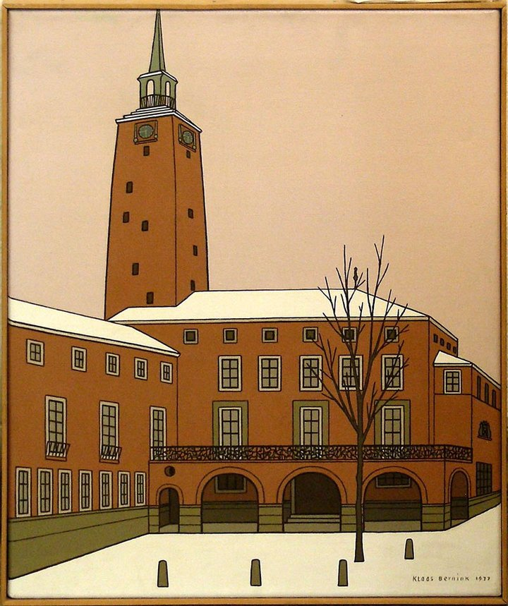

7. Stadhuis Enschede

Stadhuis van Enschede
Het stadhuis van Enschede werd gebouwd tussen 1930 en 1933. De architect was Gijsbert Friedhoff. Hij ontwierp het gebouw in de stijl van de Delftse School, met invloeden uit Scandinavië. In deze periode was er voorzichtig economisch herstel. Daarom koos men voor een ontwerp dat sober was, maar toch trots en waardig. Het stadhuis bestaat uit twee delen: een vierkante vleugel en een langwerpige vleugel. Tussen deze twee staat een slanke toren van meer dan 50 meter hoog. Samen vormen ze een rustig en evenwichtig geheel. Daardoor heeft het stadhuis een monumentale uitstraling die nog steeds indruk maakt. Door de jaren heen speelde het gebouw een belangrijke rol in de stad. Tijdens de Tweede Wereldoorlog raakte het beschadigd. In 2000 werd het gebruikt als crisiscentrum na de vuurwerkramp. Het stadhuis is dus niet alleen een plek voor bestuur, maar ook een plek van herinnering en saamhorigheid. Klaas Bernink koos dit gebouw vanwege de strakke lijnen en de rustige kracht die het uitstraalt. In zijn schilderij laat hij niet alleen de architectuur zien, maar ook de symboliek van orde en verbondenheid. Zo wordt het stadhuis een verhaal in steen, dat Bernink met kleur en perspectief tot leven brengt.